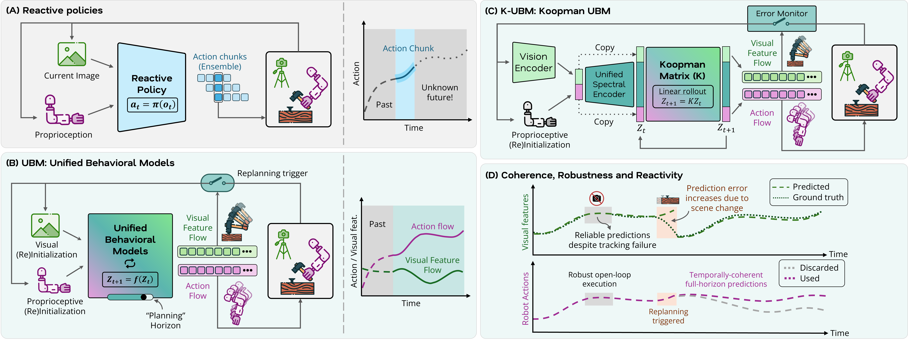
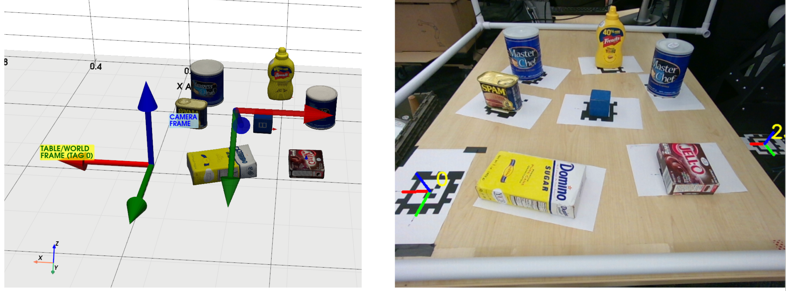

Linhao Bai
In-hand object rotation is a fundamental capability for dexterous robotic manipulation, but remains challenging due to complex contact dynamics, underactuation, and the need for precise coordination across multiple fingers. This project studies how multi-fingered robotic hands can achieve stable and controllable object reorientation under real-world sensing and execution noise.
Our focus is on learning and control strategies that produce smooth, reliable finger-object interaction while preserving robustness to imperfect state estimation and hardware limitations. The broader goal is to enable dexterous systems to manipulate objects within the hand, rather than relying only on pick-and-place style grasping.

Yunhai Han, Linhao Bai, Ziyu Xiao, Zhaodong Yang, Yogita Choudhary, Krishna Jha, Chuizheng Kong, Shreyas Kousik, Harish Ravichandar
Under review
arXiv
Recent progress in imitation learning for dexterous manipulation has been driven by expressive policy classes such as diffusion and transformer models. However, these approaches often require substantial data and computation, and they typically model manipulation as a reactive input-output mapping with fixed-horizon action chunking. This creates a fundamental trade-off between temporal coherence and reactivity. :contentReference[oaicite:1]{index=1}
In this work, we introduce Unified Behavioral Models (UBMs), which represent dexterous skills as coupled dynamical systems that capture the joint evolution of visual flow and proprioceptive action flow. Building on this idea, Koopman-UBM learns a structured latent representation in which the combined visuo-motor dynamics can be modeled by a linear system in a lifted space. :contentReference[oaicite:2]{index=2}
This formulation allows the model to function as an implicit planner: from an initial observation, it can analytically generate temporally coherent robot behavior while simultaneously imagining how visual features evolve throughout the skill horizon. The result is a planning-oriented alternative to conventional reactive policy architectures for visuo-motor dexterity. :contentReference[oaicite:3]{index=3}

Linhao Bai
Slides
Collecting large-scale robot demonstrations in the real world is expensive, slow, and difficult to scale across tasks and embodiments. Video2Sim2Real explores a practical alternative: starting from video data, constructing a simulation-compatible task representation, and then transferring the learned behavior back to physical robotic systems.
The project studies how visual demonstrations can be converted into structured supervision for robot learning, enabling rapid prototyping of visuomotor policies without requiring full robot teleoperation for every new task. By bridging raw video observations, simulated training, and deployment on hardware, the pipeline aims to reduce the iteration cost of developing robotic manipulation skills.
More broadly, Video2Sim2Real is motivated by the idea that scalable robot learning will likely depend on better ways to reuse internet-style or human-collected visual data, while still benefiting from the control, safety, and repeatability provided by simulation during policy development.